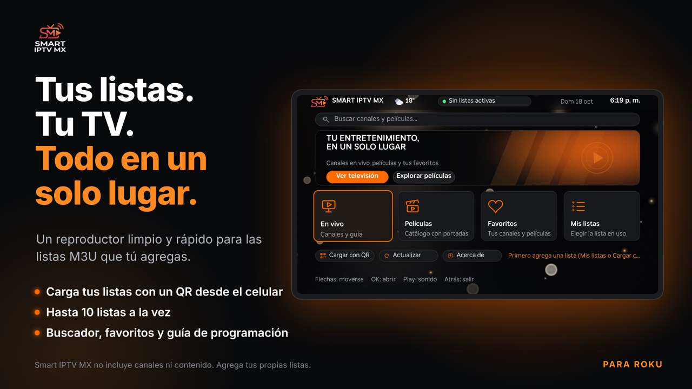

Smart IPTV MX

Smart IPTV MX está creado para que cargar tus listas sea fácil y rápido, incluso si nunca lo has hecho: escaneas un código QR con tu celular, envías tus listas y listo. La app no incluye ni distribuye contenido; tú agregas tus propias listas.
Qué ofrece
- Carga por QR desde el celular, hasta 10 listas a la vez, cada una con su guía.
- Varias listas activas al mismo tiempo.
- Guía de programación (XMLTV), buscador y favoritos.
- Controles de reproducción, subtítulos e idioma del audio.
- Las películas largas retoman donde te quedaste.
- Interfaz dinámica y clima en tiempo real con pronóstico de 7 días.
Soporte
¿Cómo cargo mi lista?
En la pantalla principal elige "Cargar con QR", escanea el código con tu celular (conectado al mismo Wi-Fi que la TV), acepta el aviso y pega el link de tu lista.
¿La app trae canales?
No. Es solo un reproductor; necesitas tus propias listas y los derechos para ver su contenido.
Un canal no abre
Es probable que el servidor de ese canal esté caído. Prueba otro canal o revisa tu lista con tu proveedor.
Se tarda en cargar
Las listas muy grandes tardan más. Usa listas ligeras y deja activas solo las que necesites.
¿Dudas, errores o sugerencias? Escríbenos a jean.iptvmx@gmail.com e indica el modelo de tu Roku y qué ocurrió.